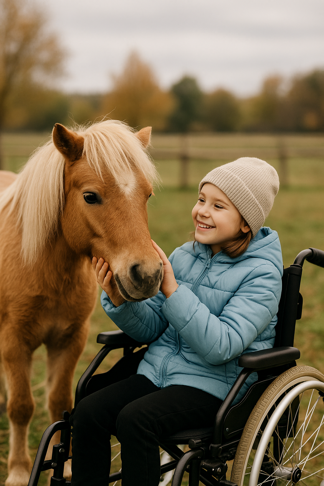

Wir wollen helfen
Kindern – Tieren – Menschen in Not
Gemeinsam engagieren wir uns für eine bessere Zukunft für Kinder, Tiere und alle, die Hilfe brauchen.

Über uns
Zweck der Stiftung ist die Förderung von Kindern und Jugendlichen (§ 52 Abs. 2 S. 1 Nr. 4 AO), die Förderung des Tierschutzes (§ 52 Abs. 2 S. 1 Nr. 14 AO) sowie die Förderung des bürgerschaftlichen Engagements zugunsten gemeinnütziger und mildtätiger Zwecke (§ 52 Abs. 2 Nr. 25 AO).
Gegründet 2025
Unsere Förderfelder
Förderung von Kindern & Jugendlichen
Neue Chancen für Kinder und Jugendliche: Wir fördern soziale Einrichtungen, kreative und sportliche Angebote und leisten gezielte Hilfe bei besonderem Bedarf.
Tierschutz
Wir unterstützen Tierheime, Gnadenhöfe und Vereine – für mehr Schutz, Gesundheit und Fürsorge für Tiere in Not.
Bürgerschaftliches Engagement
Für Menschen in der Region, die unverschuldet in Not geraten sind, machen wir schnelle Hilfe möglich – gezielt, menschlich und direkt.
Team

Heinz Kirmse
Vorstandsvorsitzender
Ralf Holtorf
Stellv. Vorsitzender

Anna Schmidt
Vorstandsmitglied

Marina Kirmse
Mitglied des Stiftungsbeirats

Annalena Kirmse
Mitglied des Stiftungsbeirats
Auch du kannst helfen
Bankverbindung
IBAN: DE00 0000 0000 0000 0000 00
BIC: GENODEF1XXX
IBAN: DE00 0000 0000 0000 0000 00
BIC: GENODEF1XXX
Spenden und Zustiftungen willkommen – deine Unterstützung kommt direkt unserem gemeinnützigen Zweck zugute.
Spenden bis zu 300 Euro können ohne Zuwendungsbescheinigung beim Finanzamt geltend gemacht werden. Für höhere Beträge stellen wir gerne eine Bescheinigung aus. Zustiftungen bieten erweiterte steuerliche Möglichkeiten; wir informieren dich gern und empfehlen bei Bedarf die Abstimmung mit einem Steuerberater.
Ob einmalig oder regelmäßig: Jeder Beitrag zählt!
Spenden bis zu 300 Euro können ohne Zuwendungsbescheinigung beim Finanzamt geltend gemacht werden. Für höhere Beträge stellen wir gerne eine Bescheinigung aus. Zustiftungen bieten erweiterte steuerliche Möglichkeiten; wir informieren dich gern und empfehlen bei Bedarf die Abstimmung mit einem Steuerberater.
Ob einmalig oder regelmäßig: Jeder Beitrag zählt!
Brauchst du unsere Hilfe?
Du kennst Menschen, Tiere oder Organisationen, die Unterstützung brauchen oder sich über unsere Hilfe freuen würden? Melde dich gerne – wir hören zu und helfen unkompliziert!
Bitte beachte, dass wir gesetzlich an die oben genannten Förderfelder gebunden sind und nur Vorhaben unterstützen können, die in diese Bereiche passen. Wirf daher vor deiner Anfrage gerne noch einmal einen Blick auf unsere Förderfelder.
Schreib unsBisherige Projekte (Beispiele)

Kinderlachen fördern
Finanzierung von Freizeitangeboten für benachteiligte Kinder in der Region.

Neues Leben für Tiere
Unterstützung eines regionalen Gnadenhofs für alte und kranke Tiere.
Nachbarschaftshilfe
Direkte Hilfe für Familien nach einem Wohnungsbrand in Ingelheim.